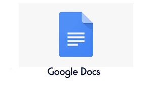
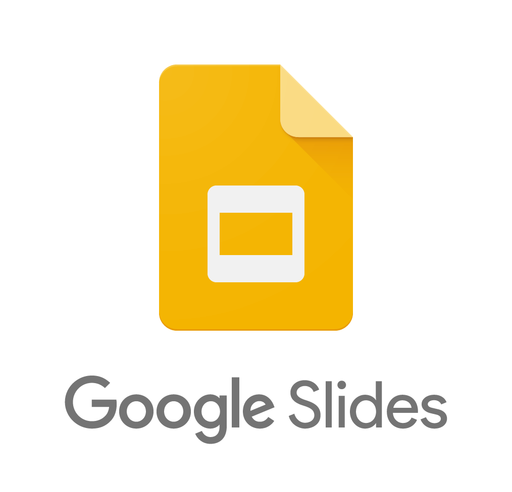
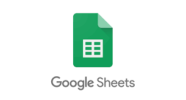

Office en Google Drive
Actualmente es muy facil poder crear y editar archivos sin la necesidad de tener instalado en nuestro computador el paquete Office 365, ya que mediante la plataforma Google Drive es posible crear y editar documentos que quedan guardados en la nube y que podemos compartir de una manera rapida y sencilla con nuestros contactos.

Documentos de Google
Cree y edite documentos de texto directamente en su navegador sin necesidad de software específico. Pueden trabajar varias personas al mismo tiempo en un archivo y todos los cambios se guardarán automáticamente.

Presntaciones de Google
Tus ideas siempre destacan con Presentaciones de Google, ya que te ofrece una gran variedad de temas de presentación, cientos de fuentes, la posibilidad de insertar vídeos, animaciones y muchas más opciones.

Hojas de cáclulo
Tus ideas siempre destacan con Presentaciones de Google, ya que te ofrece una gran variedad de temas de presentación, cientos de fuentes, la posibilidad de insertar vídeos, animaciones y muchas más opciones.
